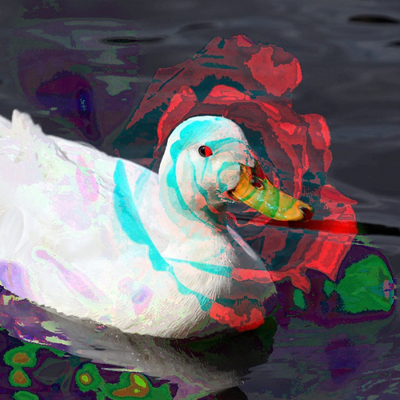

Secret Codes and Image Manipulation Tool

I participated in the Python Discord Code Jam, an annual event that
provides an opportunity for individuals to collaborate on coding
projects. A Code Jam is essentially a competition where participants are
grouped into teams and given a specific programming task and theme to
guide their project. They have a limited time frame, usually a little
over a week, to create the best possible project based on the given
theme and requirements.
In the context of the Python Discord Code Jam, this event focuses on
fostering creativity, teamwork, and coding skills. It's a chance for
developers to work together to create innovative and exciting projects,
often with a specific focus or theme, as was the case with this year's
theme of "Secret Codes" and the use of image manipulation tools. Code
Jams are not only about competition but also a great opportunity for
learning, collaboration, and having fun with coding.
To participate in the Python Discord Code Jam, I had to complete a qualifier task. This task involved rearranging tiles in an image based on specific rules. The goal was to ensure that the provided input allowed for a valid rearrangement. I had to implement functions to check if the tile size divided the image size without remainders and if the provided ordering used each input tile exactly once. This qualifier task tested my skills in image manipulation and validation logic and was a prerequisite for participating in the Code Jam event.
Qualifier Rules
Benevolens is an automatic secret code translation tool! It's main
functionality consists on passing an image with a secret code somewhere
on it, then benevolens will create a new image that contains the decoded
text.
The program uses Tesseract to read text from images using Optical
Character Recognition (OCR). Using steganography and text ciphers,
benevolens inputs physical images of handwritten text, and can decode it
according to some cipher. This text is generated by the tool itself.
Benevolens does have a Command-Line Interface (CLI) which makes the tool
quick and easy to use and set up. Hidden messages can be stored by hand
in handwritten notes, and quickly deciphered using the tool.
Benevolens inputs an image that contains some encoded (handwritten) text
and outputs and image with that section translated.
Using a random (or generated) noise cipher image, or a seed, text is
read from an image and parsed using that cipher.
Image steganography is a technique of hiding secret information or data
within an image without altering its visible appearance to the human
eye. In other words, it's a way to embed hidden messages or content
within an image so that it appears like a normal image to casual
observers. This can be achieved by subtly modifying the image's pixel
values or other data while preserving the image's overall visual
integrity. Image steganography is often used for secure communication
and data concealment.
Using XOR images for steganography involves taking two original images,
performing a bitwise XOR operation between them to create a third image.
This third image serves as a hidden container. What's intriguing is that
you can XOR one of the original images with this container to reveal the
other original image. XOR's reversible property makes this possible;
XORing the same values twice cancels out the effect, offering a simple
yet reversible way to hide and retrieve one image within another.
However, it's important to note that this method is not a robust
encryption technique and is mainly used for educational or basic data
concealment purposes.
When you XOR (exclusive OR) two images, you perform a pixel-wise
operation between the corresponding pixels of the two images. XOR is a
bitwise operation that compares the binary representation of each pixel
in the two images. The result is a new image where each pixel is the
result of applying the XOR operation to the pixels of the original
images at the same position.
The XOR operation is commonly used in steganography and other
applications to manipulate the binary data of images. It can be a way to
hide or reveal information within images, as it alters the pixel values
in a reversible manner.
(clearly needed some testing)
but you can try it out down below!
*Information and getting started information already included in the README.md file
GitHub Repo